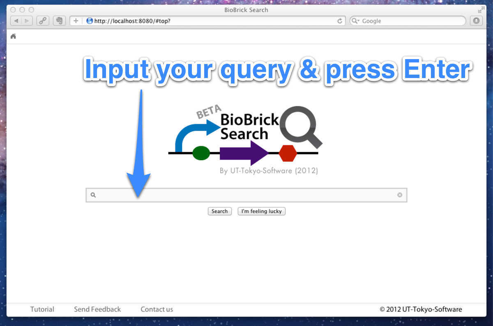
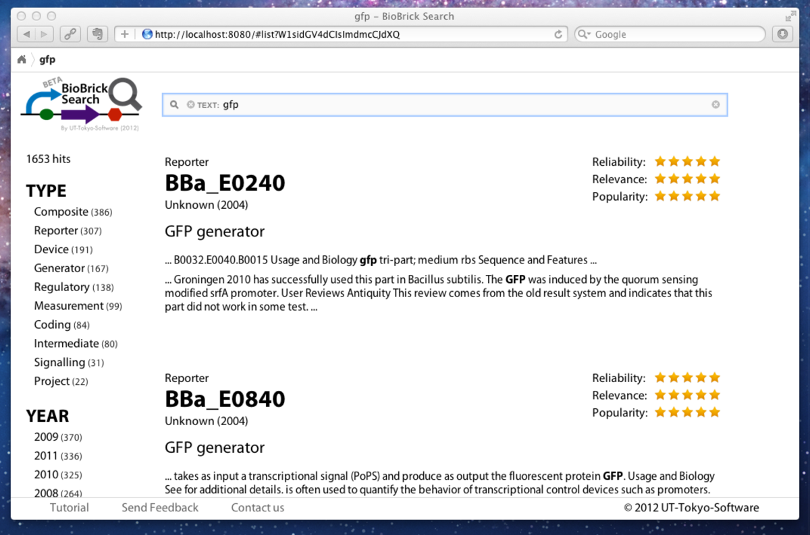
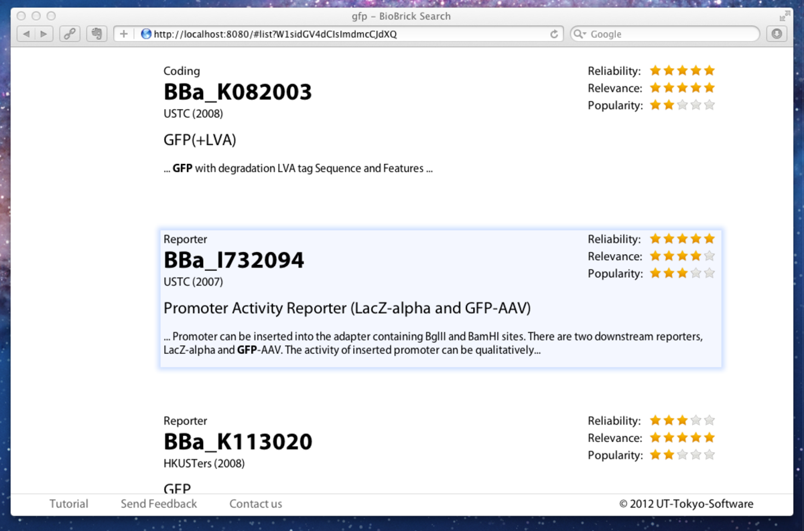
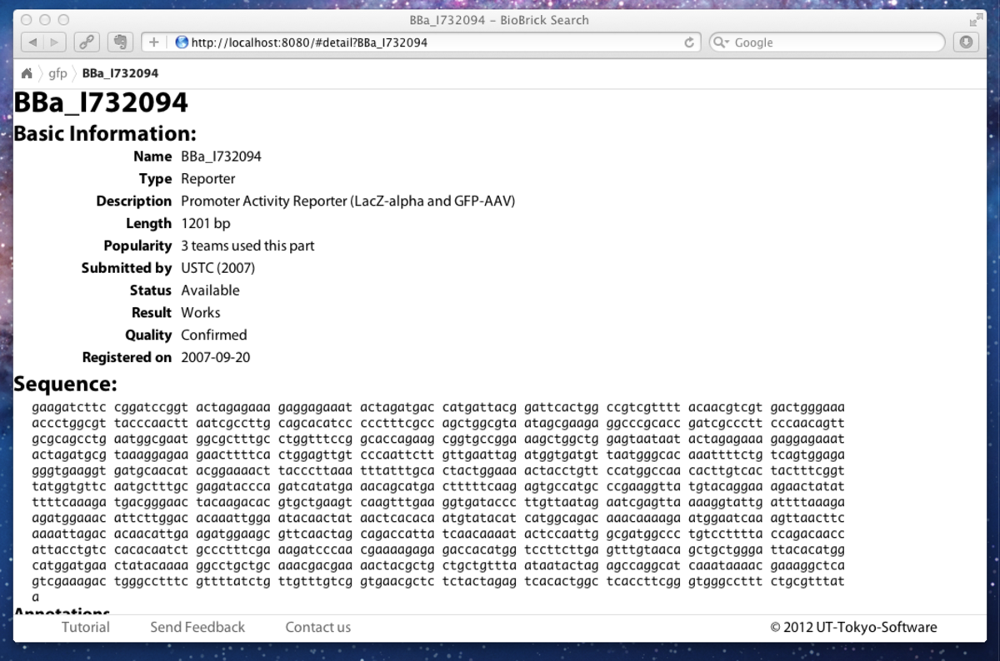
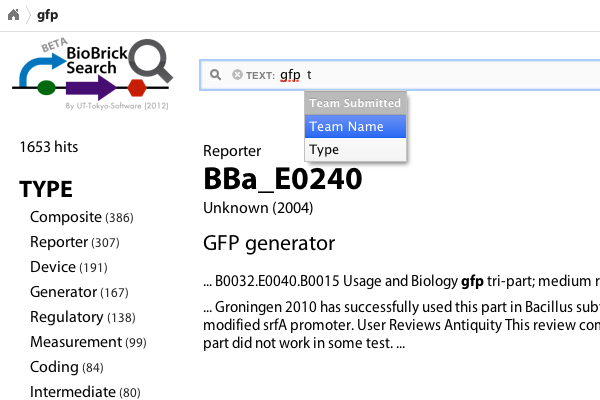
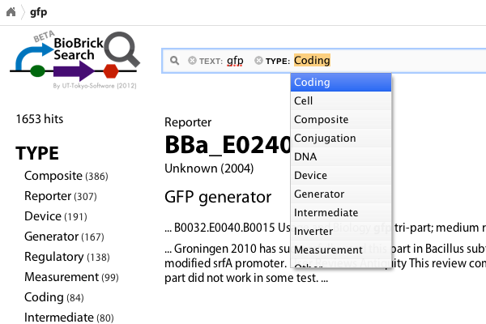
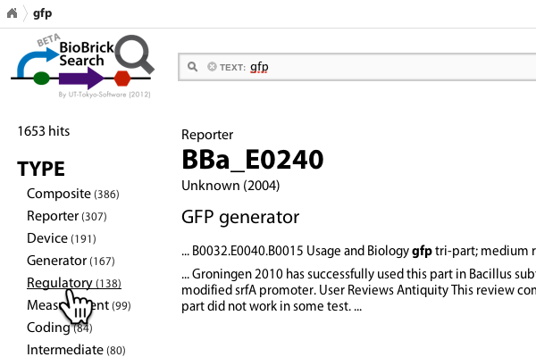

At a loss for which GFP BioBrick to use?
Tired of user-unfriendly search functionality on partsregistry.org?
Then our BioBrick Search may be the best solution for you.
Our new parts scoring based on popularity and reliability combined with sophisticated user interface ensures your speedy and comfortable search experience.
|  |
Step 1. Type your queryAs you open top page of BioBrick search, you will see a search window that resembles a popular search engine. Type your query (any text like 'gfp', 'mercury' or 'cI promoter') in the search box and press 'Enter' key (or press 'Search' button below) to perform search. cf. The search box is already focused when you open the page so you do not need to put focus on the search box manually. |
|  |
Step 2. Browse the resultsNow you see a full list of BioBricks that match your query. On the left column, you see the number of hits and the number of hit parts belonging to each BioBrick type (e.g. 'Coding', 'Device', or 'Reporter') or submitted each year. You can filter the results by type or year submitted by clicking them. On the right column, the list of results is shown. Stars on the top right corner of each BioBrick represents the reliability (Will this BioBrick work?), relevance (How relevant is this BioBrick to your query?) and popularity (How many teams have used this BioBrick?). BioBricks are sorted by the combination of these 3 factors. |
|  |
Step 3. Find the BioBrick of interestScroll through the list and find the BioBrick of interest. More results are automatically loaded as you reach the bottom of the list until all of the results are shown. You can also navigate through the list by j-k keys. By typing 'j' you can go down to the next BioBrick while pressing 'k' navigates you to the previous BioBrick. When you find a BioBrick of interest, click on the BioBrick to highlight the BioBrick. By clicking on the highlighted BioBrick, you can get detailed information on that BioBrick. Here again, you can use keyboard to get to the detail page by pressing 'o'. |
|  |
Step 4. Get the details on a specific BioBrickThis page shows the detailed information about the BioBrick of your choice. You can go back to the list of results by browser's back button or by pressing 'b' key. |
Got too many results? You can filter the results by many criteria to reduce the unwanted results.
|  |
Filter using the search boxActually on the search box, you can specify not only 'text' but also other criteria including type of BioBrick, year submitted, and team submitted. For example, if you type 't' right next to the your text query on the search box, pop-up suggestion appears that allows you to add a new criterion. Select your desired criterion by arrow keys and press 'Enter'. List of criteria currently available is shown below:
| ||||||||||
|  |
Specify the value for the category you selected. For some categories, completion pop-up appears. After typing in, hit 'Enter' to perform search again. Of course, you can add more than 2 criteria in the same manner. Even a complicated query like this can be performed! Removing filters is as easy as 1-2-3. You can remove them by clicking on the 'x' button on the left of each filter. | ||||||||||
|  |
Filter using the left columnYou can also filter results by clicking on a entry on the right column. The number inside parantheses shows the number of BioBricks that match the condition. |